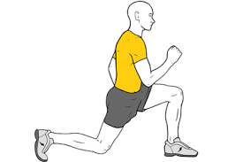
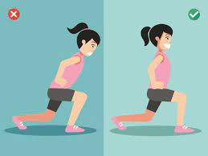

Técnica · En casa · 10 de junio de 2021
Zancada con autocarga (estocada)
Zancadas con autocarga: Tonifica tu tren inferior sin equipamiento
Las zancadas son un ejercicio de autocarga ideal para fortalecer y tonificar el tren inferior (cuádriceps, isquiotibiales, glúteos y músculos de la cadera) sin necesidad de equipamiento. Esto las hace perfectas para realizarlas en casa, al aire libre o en cualquier lugar, sin depender de máquinas o accesorios deportivos.
¿Qué es una zancada?
La zancada consiste en dar un paso hacia adelante o hacia atrás, flexionando ambas rodillas hasta formar un ángulo de 90º. En la posición final:
- La pierna trasera debe tener la rodilla, cadera y hombro alineados.
- La pierna delantera mantiene la rodilla alineada con el tobillo y la cadera también a 90º.
A diferencia de la estocada, donde los pies ya están separados a la distancia óptima y el movimiento es vertical (ascenso y descenso), la zancada implica un desplazamiento dinámico desde la posición de pie, volviendo a la posición inicial tras cada repetición.
Beneficios de las zancadas
- Fortalecen cuádriceps, isquiotibiales, glúteos y músculos estabilizadores.
- Mejoran el equilibrio, la coordinación y la estabilidad de la cadera.
- Aumentan la flexibilidad y la movilidad de las caderas.
- Son versátiles: se pueden modificar para aumentar intensidad o trabajar diferentes músculos.
Técnica para una zancada perfecta
- Postura inicial: Ponte de pie con los pies separados al ancho de las caderas, espalda recta y abdomen activado.
- Movimiento:
- Da un paso amplio hacia adelante (o atrás) con una pierna.
- Flexiona ambas rodillas hasta que formen un ángulo de 90º, asegurándote de que la rodilla delantera no sobrepase la punta del pie.
- Mantén el torso recto y los hombros relajados.
- Regreso: Impulsa con la pierna delantera (o trasera, si haces zancadas hacia atrás) para volver a la posición inicial.
- Repite: Alterna las piernas o completa todas las repeticiones con una pierna antes de cambiar.
Consejos clave:
- Mantén la rodilla delantera alineada con el tobillo para protegerla.
- Evita inclinar el torso hacia adelante; mantén la mirada al frente.
- Respira: inhala al bajar, exhala al subir.
Variaciones para intensificar las zancadas
- Zancadas con elevación:
- Apoya la pierna delantera en un escalón o plataforma baja (10-20 cm) para aumentar la intensidad.
- Alternativa: parte desde un escalón y haz zancadas hacia atrás, alternando piernas.
- Zancadas caminando:
- En lugar de volver a la posición inicial, avanza con cada zancada, alternando piernas. Ideal para trabajar la coordinación y la resistencia.
- Zancadas laterales:
- Desplaza una pierna hacia un lado, flexionando la rodilla mientras mantienes la otra pierna estirada.
- Trabaja los aductores (cara interna del muslo) y abductores (cara externa), además de cuádriceps y glúteos.
- Zancadas con salto:
- Realiza una zancada y, al volver, impulsa un salto para cambiar de pierna en el aire. Aumenta la intensidad cardiovascular y la potencia.
- Zancadas con peso (opcional):
- Si deseas añadir resistencia, usa mancuernas, botellas de agua o una mochila con peso.
Errores comunes a evitar
- Rodilla adelantada: Si la rodilla delantera sobrepasa los dedos del pie, aumenta el riesgo de lesión. Ajusta la longitud del paso.
- Inclinación del torso: Mantén la espalda recta para evitar tensión en la columna.
- Pasos demasiado cortos: Un paso muy corto reduce la efectividad del ejercicio y sobrecarga las rodillas.
Progresión para principiantes y avanzados
- Principiantes: Comienza con 2-3 series de 8-12 repeticiones por pierna, enfocándote en la técnica. Usa una pared o silla como apoyo si necesitas mejorar el equilibrio.
- Intermedios: Aumenta a 3-4 series de 12-15 repeticiones e incorpora variaciones como zancadas laterales o caminando.
- Avanzados: Prueba zancadas con salto o con peso, y combina con otros ejercicios (sentadillas, peso muerto) para un entrenamiento completo.
Conclusión
Las zancadas son un ejercicio versátil y efectivo para construir un tren inferior fuerte y funcional. Con una técnica adecuada y la incorporación de variaciones, puedes adaptarlas a tu nivel y objetivos, ya sea tonificar, ganar fuerza o mejorar la movilidad. ¡Incorpora las zancadas a tu rutina y transforma tu tren inferior sin necesidad de equipamiento

